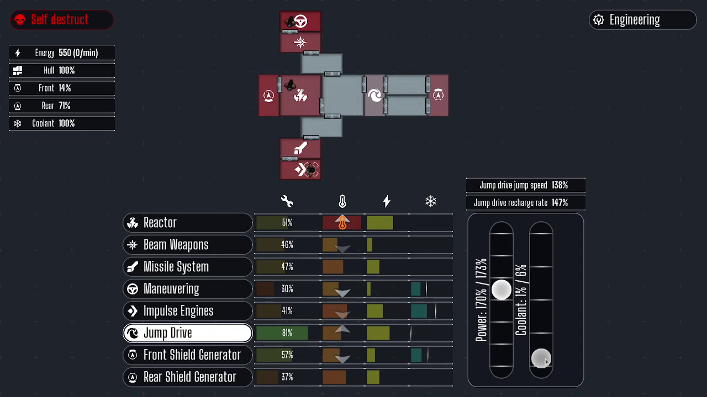
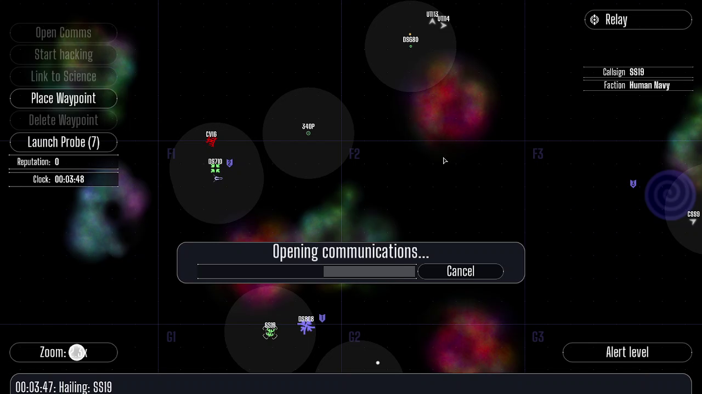

What is it?
EmptyEpsilon is a space ship bridge simulator game. It's fully open source, can be modified in any way people wish.What does this mean?
EmptyEpsilon allows you to play a space ship bridge. Like seen in Star Trek. So you gather a bunch of friends and act like a real starship crew. Where everyone has their own station with their own job to do. Except for one person, his job will be the roll of the captain. He has to manage the whole crew by talking (or shouting) with them.Artemis Spaceship Bridge Simulator?
Artemis Spaceship Bridge Simulator was the inspiration for EmptyEpsilon. It's pretty good as a bridge simulator. But I and some other guys had some issues with it. For example, the "comms" station of Artemis is pretty limited causing that station to be boring for the player. There where also issues with the game desyncing, causing confusion alogn players. Also the GameMaster screen pretty much did not what I wanted to see from a GameMaster screen.So, all in all. Nice game. But we wrote our own due to lack of features.
Contact
The best place to talk about bridge simulation and EmptyEpsilon is the The Starship Bridge Simulation Network
Main screen view from a cruiser near a station being attacked by two enemy cruisers.

View on the helms officers screen. Controls the movement of the ship.

View on the helms weapons screen. Controls the weapons and shields of the ship.

View on the engineering screen. Can boost different subsystems and repair systems.

View on the science officers screen. Has long range scanners.

View on the relay officers screen. Can see friendly ships, and what's in the short range radar range of friendly ships. Can call ships and stations for different requests.
The captain has zero direct control of the ship. However, he is tasked with keeping the whole crew together and setting tactics. The main screen should be setup on a large monitor or beamer, visible for all players.
The captains tasks include (but are not limited to):
- Planning the next actions
- Co-ordinating combat tactics
- Preventing mutiny
- Setting priorities
Controls:
(Note that these controls are optional, and do not have to be used to play the game, but could be used in custom hardware setups)
- Left mouse button: Rotate the main screen 90deg to the left
- Right mouse button: Rotate the main screen 90deg to the right
- Middle mouse button: Switch between ship, radar and long range radar view
- Up key: Set mainscreen view to forward view
- Down key: Set mainscreen view to rear view
- Left key: Set mainscreen view to left view
- Right key: Set mainscreen view to right view
- Tab key: Set mainscreen view to short range radar view
- Q key: Set mainscreen view to long range radar view
Notes
There are a lot of ways to setup the mainscreen and captain role. You can designate a single station to give control of the main screen. But you can also give the captain direct control of the main screen with the above controls.
A simple "custom" hardware setup for the captain would be using tape to attach a 3 button mouse to an armchair.
TODO
TODO
TODO
TODO
TODO